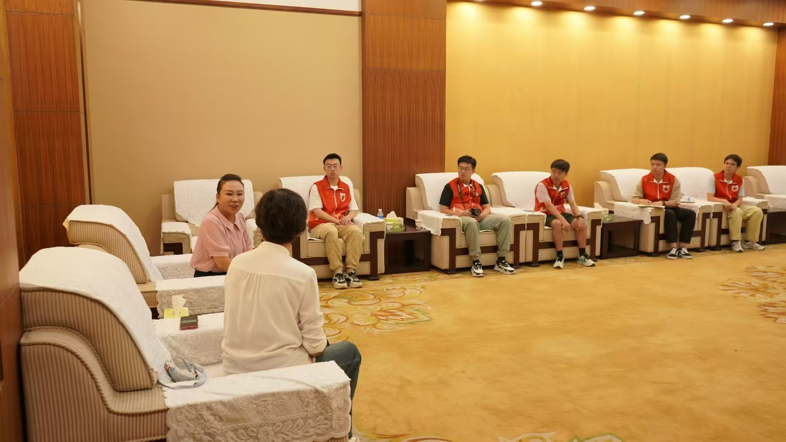
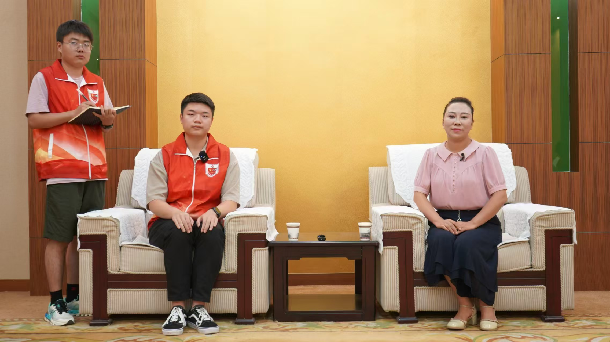

中北大学“数智赋能百年红色家书”暑期社会实践团成员在指导教师杜瑞平的带领下，来到了位于太行山腹地的八路军太行纪念馆。这里不仅是一片静默的土地，更是一处承载着无数英雄记忆的圣地。实践团成员怀着无比的敬仰，深入探索了这段光辉岁月，让红色家书在数字化时代焕发新生。
步入八路军太行纪念馆，实践团成员们立刻被庄严肃穆的氛围所感染。在纪念馆内，每一处展览都生动再现了八路军在太行山区的抗战岁月，从战略部署到英勇战斗，从生活点滴到精神传承，无一不让人动容。团队成员仔细观察每一件展品，聆听每一段解说，深刻理解了八路军将士们为民族解放所付出的艰苦卓绝的努力。
参观结束后，实践团成员在指导教师杜瑞平的带领下，与八路军太行纪念馆田悦慧副馆长展开了座谈交流。座谈会上，双方就如何更好地赋能红色家书，弘扬革命精神进行了深入讨论。杜瑞平老师解读了“数智赋能百年红色家书”的精神内涵，田悦慧副馆长结合自己的工作经历阐述了如何更好地传承红色精神。此外，双方还就如何加强合作、共同推动革命文物价值挖掘等问题进行了探讨。双方一致认为，通过加强校馆交流合作，不仅可以实现资源共享、优势互补，还能为文物保护产业的繁荣发展注入新的活力。
会后，暑期社会实践团成员对田悦慧副馆长进行了采访。阳博才同学就“新工科大学生应如何传承红色文化，让科技与历史的结合发挥更大的教育意义”这一问题与田悦慧副馆长展开了深入交流。田悦慧副馆长指出，大学生应在习近平新时代中国特色社会主义思想的指导下，让红色文化的教育意义在技术的助力下得到升华。闫玉洁同学提出了 “如何坚持传承红色文化事业的初心初衷”的问题，田悦慧副馆长认为，红色文化是民族精神的源泉，每一名中华儿女都应不忘初心使命，为建设更美好的国家贡献自己的力量。
中北大学“数智赋能百年红色家书”暑期社会实践团的第三天，是科技与历史交汇的一天，是红色精神与现代青年对话的一天。通过参观八路军太行纪念馆，实践团成员们不仅加深了对历史的理解，更在实践中探索了红色文化传承的新路径。未来，他们将继续以“数智赋能百年红色家书”为载体，让红色记忆在新时代焕发新的活力，激励更多青年学子，不忘初心，砥砺前行。
太行精神耀千秋 革命史诗代代传
2024年08月21日
